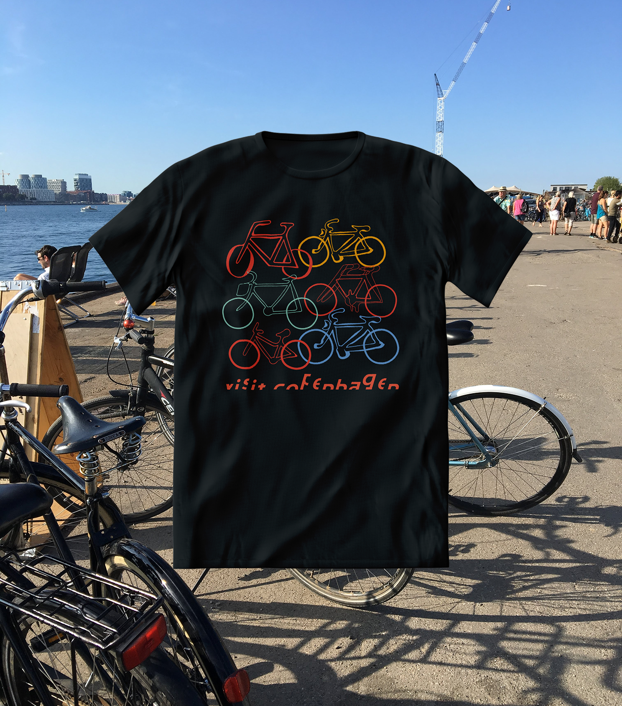

Visit Copenhagen
Timeline
Aug – Jul 2018 (1 month)


School
University of Massachusetts
Program
DIS Study Abroad
Course
Graphic Design Foundations
Overview
This project began during the DIS Graphic Design Intensive in Copenhagen, where we reimagined the branding for Visit Copenhagen. To ground our concepts, we explored different neighborhoods and studied what makes the city appealing to visitors. I’ve returned to this project over the years, refining and updating it as my design approach has developed.
Solution
Bikes fill every corner of the city, narrow alleys, train platforms, crowded sidewalks, and residential yards, creating the cozy, lived-in atmosphere Copenhagen is known for. The concept imagined contributions from multiple artists, each drawing a unique bicycle. Together, the illustrations would emphasize the individuality of each bike and rider, and the free, relaxed lifestyle that defines the city.

